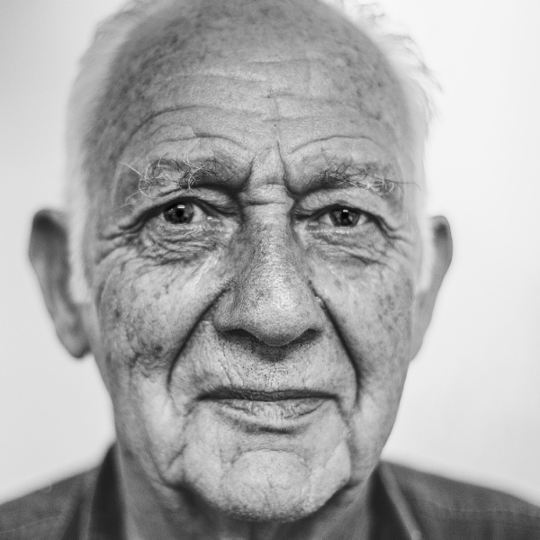

Thank you for making a difference.
What Does Volunteering Even Mean?
Volunteering is a great way that you can make a difference to our many, many animals. Volunteering in different places means different tasks and expectations. What does volunteering mean to us?
Necessary Tasks
Our cats need love! Cat TLC includes petting, playing, and just hanging out with all of our cats that need love. You can pet them in cages or take them into any one of our friendship rooms!
Our cat's also need clean homes. Cat Cage Cleaning includes cleaning of the litter box, refreshing their water and food, changing out their blankets, making sure that their toys are clean, and disinfecting the surfaces with animal friendly cleaner.
Dog's need to get a good amount of exercise. You can take out any of our dogs. They will thoroughly enjoy being walked around the neighborhood, park, and down the city streets. Must be 18 years or older.
Our events foster up to 60% of our adoptions. They are truly the heart of our organization's mission. We need event coordinators to truly bring these to fruition and to let them flourish to it's full potential. Must be 18 years or older.
We can't do anything without the helpers of our events. They are the structure and heart of our very successful events. Must be 18 years or older.
Volunteer Requirements
Benefits of Volunteering with Us
Featured Volunteers
Jennifer Mark
Jennifer was the event coordinator for the previous Cat Cafe event. She did a fabulous job. 26 cats found forever homes because of this fabulous event.
Mark Jennifer
Mark has volunteered with us for 20 years as of today. He has done everything from Cat Cage Cleaning to Event Helper. We appreciate him immensely and are showing appreciation!